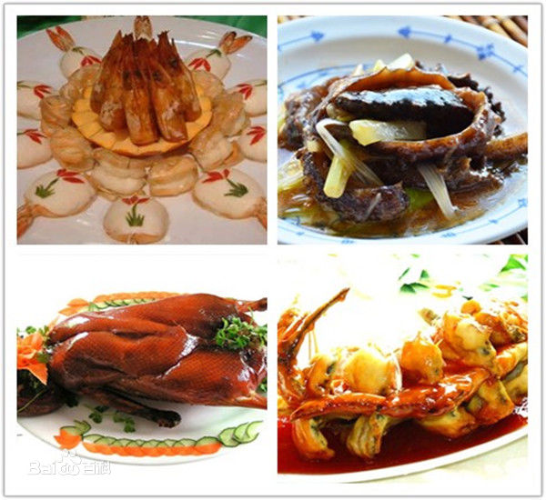

 鲁菜，是起源于山东的齐鲁风味，是中国传统四大菜系（也是八大菜系）中唯一的自发型菜系（相对于淮扬、川、粤等影响型菜系而言）
，是历史最悠久、技法最丰富、难度最高、最见功力的菜系。
2500年前山东的儒家学派奠定了中国饮食注重精细、中和、健康的审美取向；1600年《齐民要术》总结的黄河中下游地区的“蒸、煮、烤、酿、煎、炒、熬、烹、炸、腊、盐、豉、醋、酱、酒、蜜、椒”奠定了中式烹调技法的框架；明清时期大量山东厨师和菜品进入宫廷，使鲁菜雍容华贵、中正大气、平和养生的风格特点进一步得到升华。